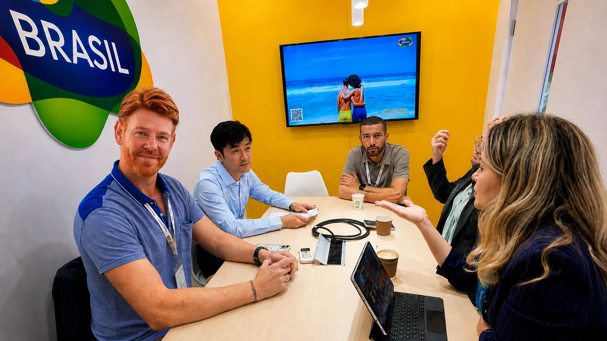
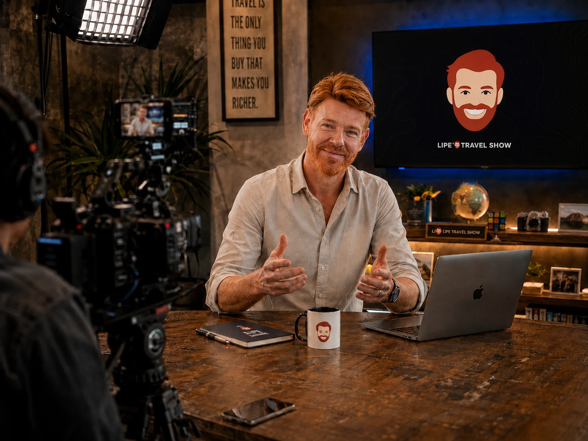
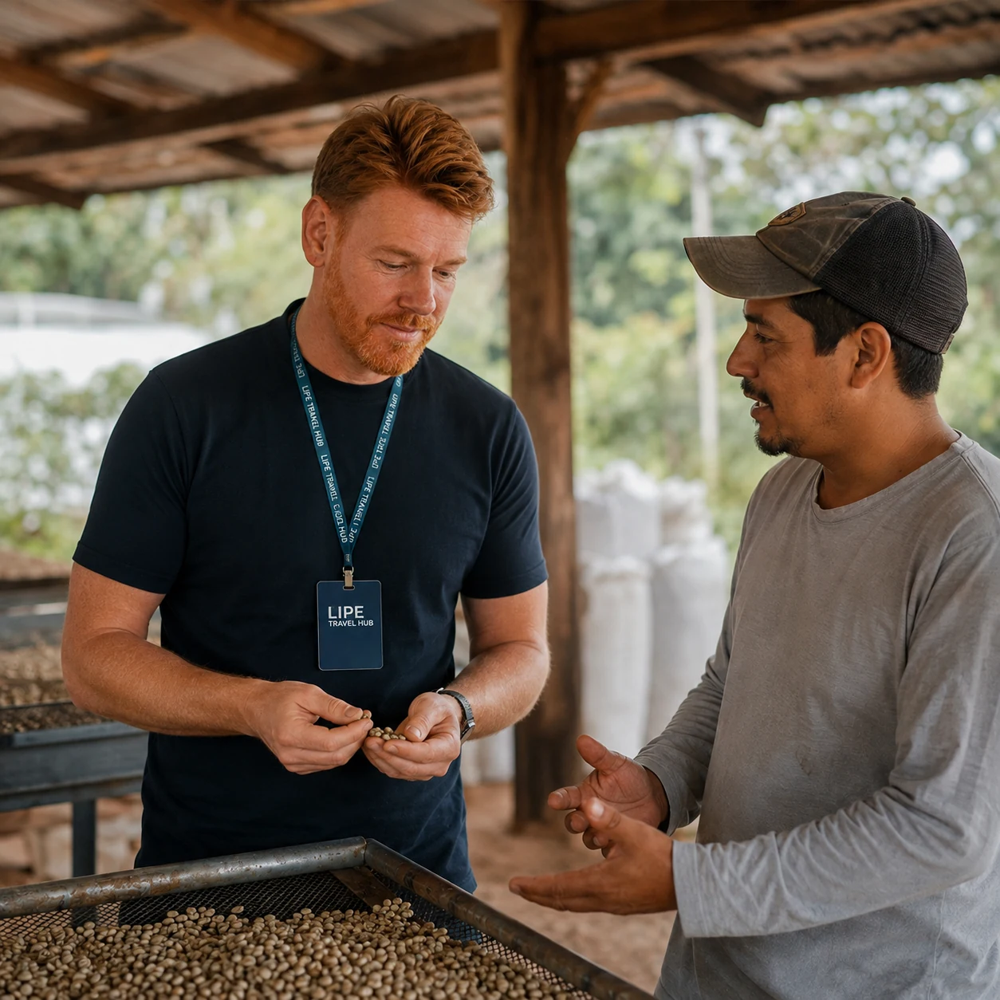
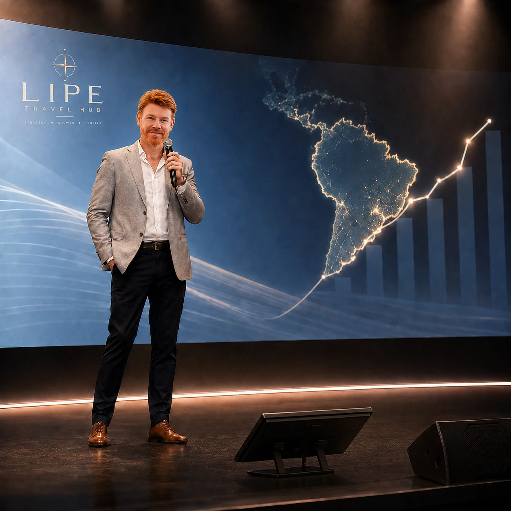
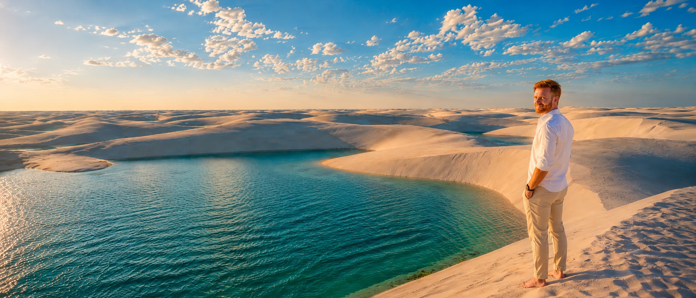
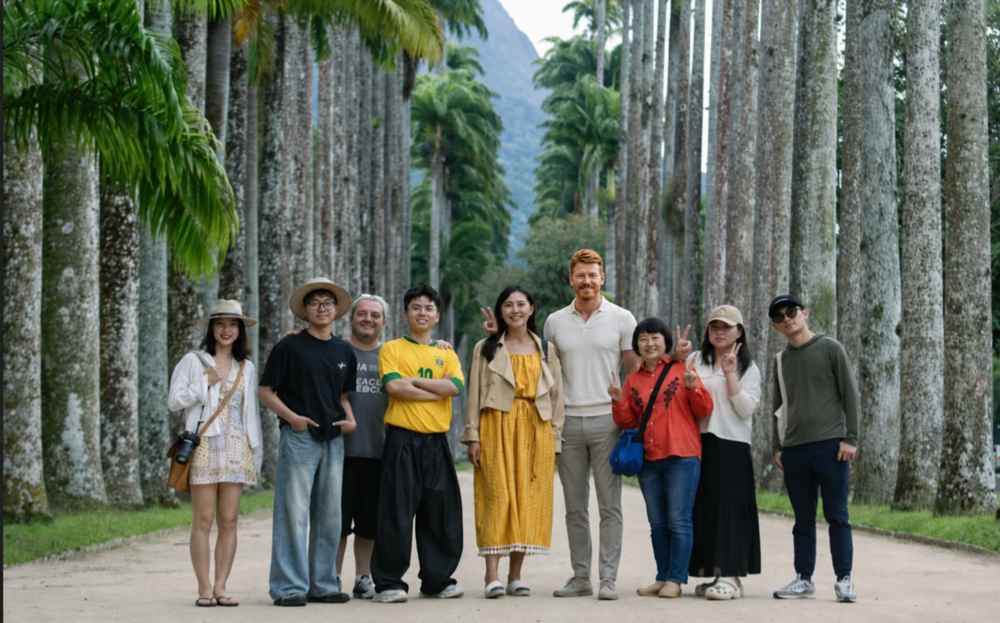

01
Advisory & Growth
Estrategia para negocios turísticos, hospitality y proyectos en transformación.
- Posicionamiento y arquitectura de producto
- Growth y estrategia comercial
- Distribución, CRM y journey
- Tecnología, IA e internacionalización
Conectamos estrategia, distribución, tecnología, educación de mercado, contenido y mercados internacionales para acelerar negocios de turismo, destinos y proyectos especiales.
El Hub reúne inteligencia de mercado, estrategia, casos, proyectos y capacidades para turismo. Usa Compass para llegar rápidamente al tema, mercado o decisión que quieras explorar.
Conectamos estrategia, mercados y ejecución para empresas, destinos e instituciones del turismo. Actuamos cuando la decisión exige contexto sectorial y claridad comercial.
Análisis sobre estrategia, inteligencia artificial, distribución, destinos, crecimiento y mercados internacionales — publicados y leídos dentro de Lipe Travel Hub.
El mayor mercado emisor del mundo vuelve a crecer — y Brasil empieza a competir por una porción mayor de esa demanda.
Leer Essential Intelligence →Estrategia que combina experiencia ejecutiva, lectura de destino y capacidad de convertir diagnóstico en acción.
Estrategia para negocios turísticos, hospitality y proyectos en transformación.
Estrategia de destinos y acceso a mercados con visión de trade, contenido y distribución.
Capacitación que prepara destinos y profesionales para operar, vender y competir entre mercados.
Contenido y proyectos propios que convierten conocimiento, audiencia y conexiones en activos de negocio.
Decisión sin capas intermedias.
Conocimiento de mercado antes del framework.
Estrategia conectada a la implementación.
Cliente, producto, partners y operación en la misma conversación.

Proyecto internacional que conecta creators, medios, destinos y relaciones institucionales para ampliar la presencia de Brasil en el mercado chino.

Plataforma editorial que combina audiencia, experiencia real en destino e inteligencia turística para influir en decisiones de viaje y acercar marcas y destinos.

Proyectos de posicionamiento, distribución, growth e internacionalización diseñados para convertir activos turísticos en propuestas más claras, deseables y comercializables.
Dos direcciones, un mismo sistema: preparar el turismo brasileño para competir fuera y ayudar a marcas internacionales a construir mercado en Brasil.
Preparación estratégica y capacitación para acceder a mercados internacionales.
Conoce Brasil MasterclassEducación del trade y activación B2B2C para construir conocimiento, recomendación y demanda en Brasil.
Explorar Mundo → Brasil
Lipe Camanzano combina visión estratégica, experiencia de mercado y ejecución cercana para convertir decisiones de turismo, distribución, digital e internacionalización en acción.

Partimos de Brasil con experiencia, presencia y relaciones construidas entre mercados — reduciendo distancias y sumando contexto a las decisiones internacionales.
Los proyectos internacionales ganan fuerza cuando estrategia y confianza conectan personas, instituciones, medios, creators y destinos.

Ecosistema de Audiencia
Sitio disponible en PT · EN · ES · 中文
Si lideras un destino, negocio de turismo, marca o iniciativa internacional y estás ante una decisión de crecimiento, conversemos.
Hablar con Lipe